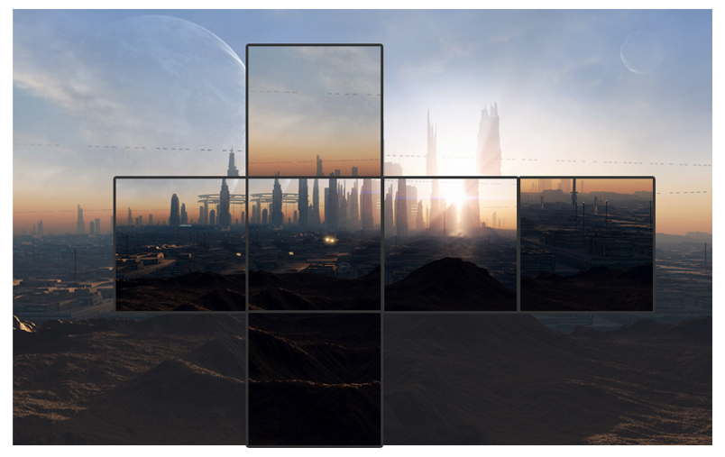
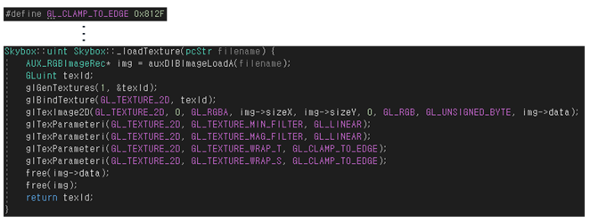
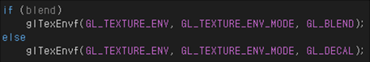
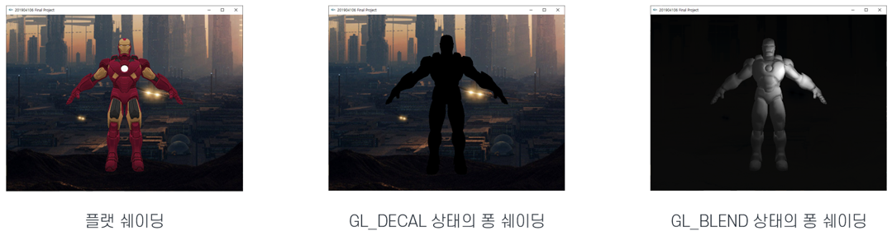
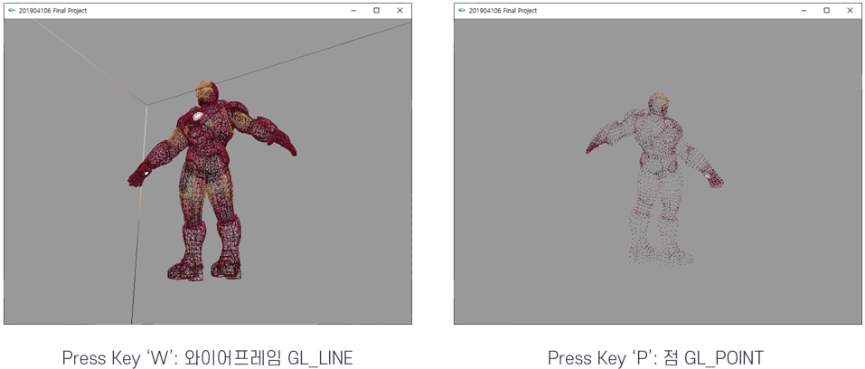

Back
Github Repository
OpenGL_Ironman
2021. 06. 12.
CubeMap

큐브맵을 제작하기 위해 기존에 있던 이미지에서 정육각형 모양대로 어색하지 않게 잘라내어 별도 파일로 삽입하였습니다.

GL_CLAMP_TO_EDGE를 통해 경계에 인접한 색상을 통해 큐브맵이 자연스럽게 이어지도록 하였습니다.

큐브맵 사용시 라이팅이 영향을 주지 않게 하기위해 GL_DECAL을 사용하지만 사용시 퐁 쉐이딩 상태가 제대로 보이지 않으므로 퐁 쉐이딩 상태에서는 GL_BLEND로 변환되게 하였습니다.

WireFrame and Point

Result
Presentation